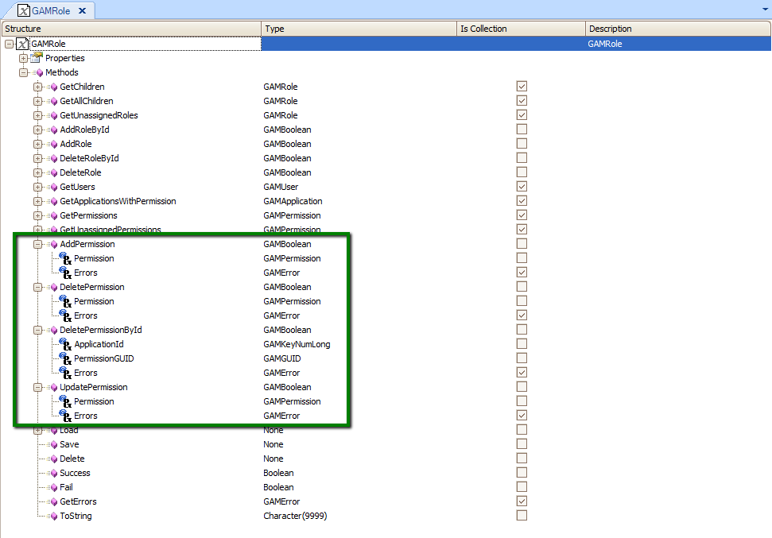

You can add GAM Permissions to GAM Roles using the GAM Backoffice (see HowTo: Adding a Permission to a Role using GAM), or programmatically using the GAM API.
In this article you see how to do it programmatically.
GAMRole object, which is part of GeneXus Access Manager Library, has methods to add, update, and delete Permissions to the Role, which we explain below.
GAMRole.AddPermission(in:GAMPermission,out:GAMError Collection) : Boolean
In this example, you will learn how to create a new Role, and add a Permission to the Role (the permission needs to exist in any Application). See Update GAM Application Permissions for more information on how to add Permissions to applications.
So in this example assume that the Permission already exists in some Application.
&Application.Load(&ApplicationID) //&Application is GAMApplication data type //First create a new Role (if it doesn´t exist) &GAMRole = new() &GAMRole.Name= 'TestRol2' &GAMRole.Description = 'TestRol2' &GAMRole.SecurityPolicyId = &SecurityPolicyId &GAMRole.Save()
If &GAMRole.Success()
&RoleId = &GAMRole.Id
//&PermissionGUID is the GUID of the Permission I want to add to the Role
&GAMPermission.ApplicationId = &ApplicationId //&GAMPermission is GAMPermission type.
&GAMPermission.GUID = &PermissionGUID
&GAMPermission.Type = GAMPermissionAccessType.Allow //Posible values are Allow, Deny and Restricted
&isok = &GAMRole.AddPermission(&GAMPermission,&Errors)
if &isok
commit
else
For &Error in &Errors
Msg(Format(!"%1 (GAM%2)", &Error.Message, &Error.Code))
EndFor
Endif
Endif
There are other methods in GAMRole object used to update and delete GAM Permissions, like DeletePermission, DeletePermissionById, and UpdatePermission.
You can edit the GAMRole object in order to see the methods available:

| Backlinks | |
| GAM - Roles | GAM - Users |
| HowTo: Adding a Permission to a Role using GAM | Update GAM User Permissions |